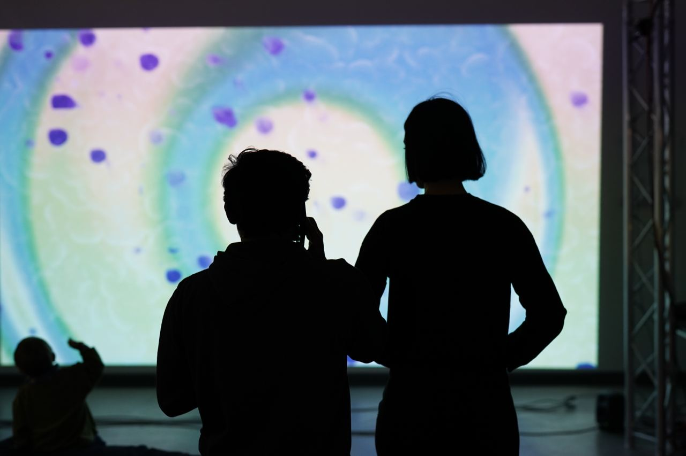
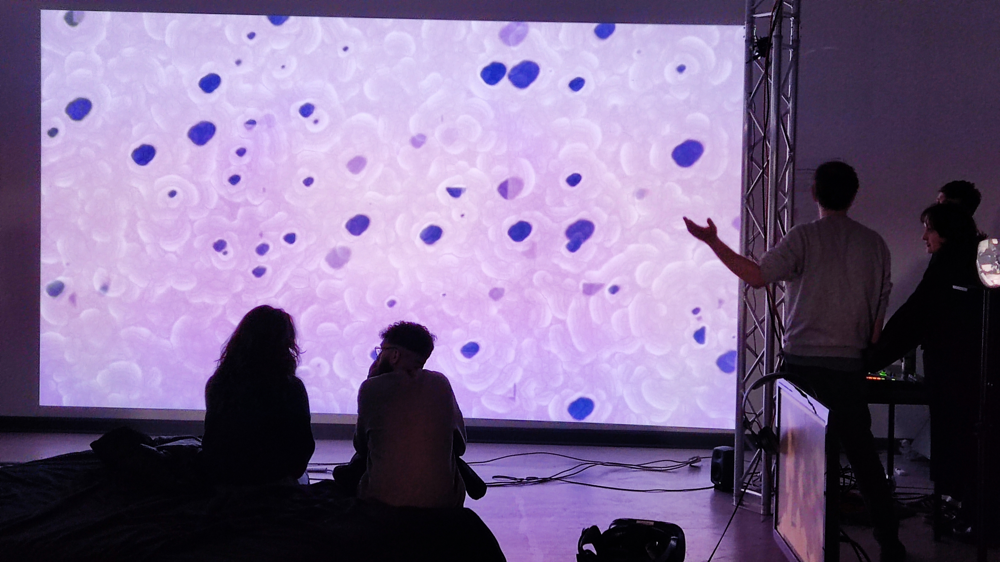
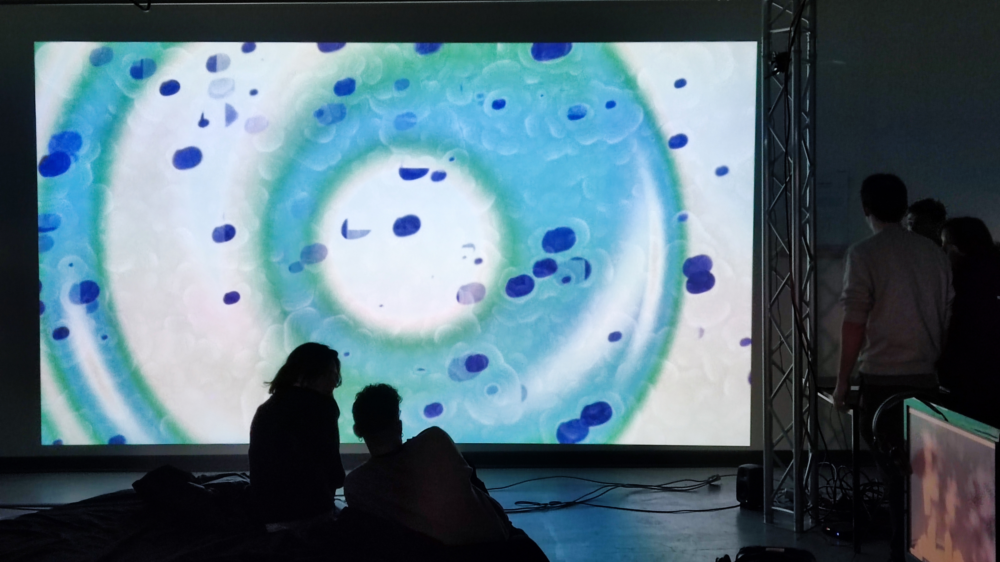
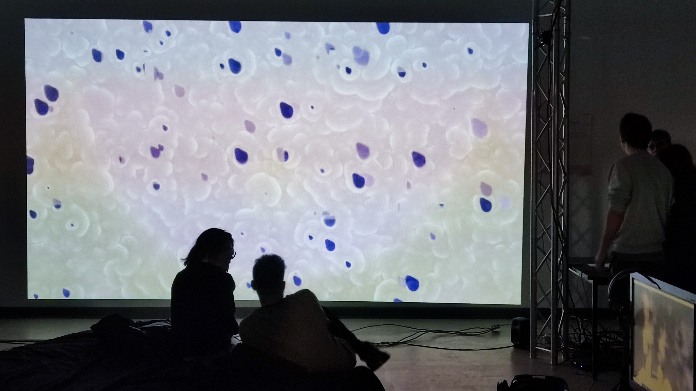

The Emotional Room
User-Reactive Audio/Video Installation; 2022
Cooperation with Lora Bourova & Keny Chan

This work was created in the course ‘Perspectives in Design’ in the winter semester 2022/23, led by Johannes Pointner, and was presented in the Open Studio exhibition 2022.
This project, developed during a design course and presented at an exhibition, explored how emotions can be represented graphically and how they relate to measurable physical responses.
It was guided by two main questions: how do emotions appear visually, and how can emotions be understood and measured psychologically. Theoretically inspired by psychological theories (e.g., James-Lange, Cannon-Bard, Schachter-Singer), the work culminated in an interactive installation that measured visitors' movement via sensors and visualized the emotional atmosphere as a dynamic projection. The project proposed that spaces might have emotional dimensions, and that design can be used to both express and influence emotional experiences through visual elements like color, shape, and movement.
Impressions of the final exhibition


